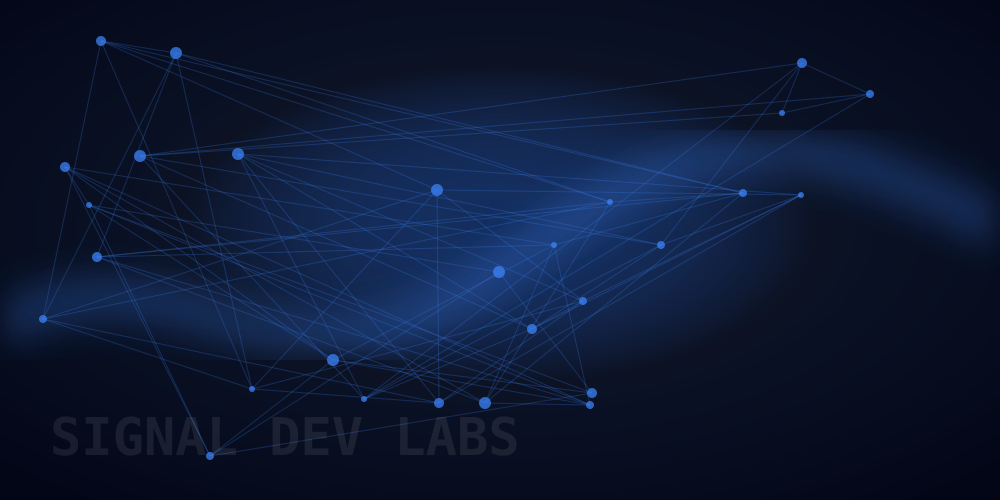

Measurement results do not match expectations
Separate device behavior from setup errors, probing effects, fixture issues, configuration mistakes, or analysis assumptions.

Real-world engineering support for teams working on complex measurement, validation, and automation challenges.
✓Built for lab problems where the waveform, fixture, script, and spec all have to agree.
SignalDev Labs helps when the measurement chain is slowing the engineering team down: unclear results, fragile setups, manual validation work, or instruments that are capable but not yet integrated into the workflow.
I have spent years standing next to engineers while a demo, validation run, or customer debug session failed in real time. That changes how you work: isolate variables, verify the setup, understand the instrument limits, and get to a practical next step instead of hiding behind vague recommendations.
These are the kinds of issues that usually do not get fixed by another slide deck or a generic application note.
Separate device behavior from setup errors, probing effects, fixture issues, configuration mistakes, or analysis assumptions.
Work through symptoms on high-speed links such as PCIe, PAM4, optical, embedded, RF, or mixed-domain systems.
Improve repeatability so one engineer can reproduce another engineer’s result without rebuilding the setup from memory.
Automate instrument control, captures, result extraction, and reports using practical Python workflows.
Turn oscilloscopes, AWGs, analyzers, and custom benches into integrated measurement systems that answer the real question.
Join the problem at the bench level: configuration, data, failure mode, test plan, and next experiment.
Examples of the kind of focused technical help SignalDev Labs is built for.
Review setup, captures, probing/fixture assumptions, and analysis configuration before deciding whether the device or the measurement is at fault.
Replace manual capture steps with a repeatable script that configures instruments, collects data, saves artifacts, and produces useful output.
Document and simplify the measurement chain so the result is repeatable across engineers, instruments, and future test runs.
If the issue involves high-speed measurements, lab automation, test setup repeatability, or unclear validation data, SignalDev Labs can help define the next useful experiment.